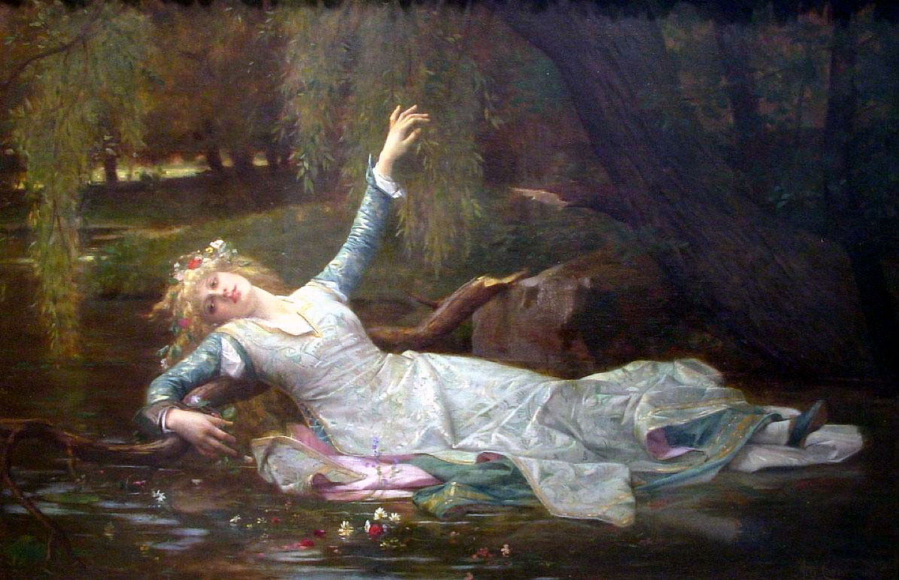

You’re not sad, you look for the blues.
If you can’t dance to Laura Marling, you can’t dance at all. You have to be like a convulsing ballerina, a jet pilot, a black swan. The heartbeat of the music needs to flow through you and pass into the aether like a misty fog. At least, this is the case for Once I Was an Eagle.
This is a perfect December listen. It’s moody and introspective, but it’s never dark. The evocative cello and the persistence of the acoustic guitar allow for sweeping, almost orchestral movement that sighs throughout the entire album. Marling dissects a past relationship with the utmost care, truly heartbroken but never cruel. She knows her own place in the world now, and she almost seems grateful for it.
Her voice is gentle, almost ASMR. Her language aids this, as phrases like “freewheeling troubadour” tumble and flow like silk tossed in the wind. Such phrases aren’t just pretty words, though.
Oh, wow, really?
Alright, fuck off.
Marling is a splendid storyteller because she doesn’t really tell stories. She describes scenarios and the emotions behind them with this liquid impermanence, a scattered timeline à la Slaughterhouse-Five.
Once I Was an Eagle is primarily a songwriting effort, yes. But to ignore the fluidity of its songs would be criminal. It is a great album for exactly that reason — it is an album. It’s hard to divorce any one song from the album to listen to on its own. Of course it is. For Marling, it’s hard to break anything into pieces, and Once I Was an Eagle uses this concept to hold together an album against all odds, like holding together a relationship that is straining to shatter. It’s difficult to pick and choose favorite songs from this beautiful fondue of sound.
Okay, so what are your favorites?
Rather than think of individual songs, I like thinking of this album in movements. The second, which I’d argue is “Master Hunter” / “Little Love Caster” / “Devil’s Resting Place,” is probably my favorite triplet on the album. The first is this jumpy, chaotic frenzy, with chattering tambourines and shaking guitars. And it fades into the very deliberate, very cautious “Little Love Caster,” with gripping ambience, crackling and blowing. It’s the best eeriness the album has, and the triangle and strings perfectly lean into the line “You are new to me,” which has this chilling half pause before the word “new.” As the background wind picks up, Marling uses alliteration and pacing to deliver some crushingly beautiful lyricism. Then it sits for a moment, thoughtful, before the trio’s haunting finale. “Devil’s Resting Place” pounds like thunder and attacks like lightning, and is such a frigid and howling song. It crashes and soars. It’s beautiful.
The interlude certainly became creepier after I noticed how similar the staggered ballroom sound was to the Caretaker’s Everywhere at the End of Time, but it is a great break before the guitar slide that tells the listener “It’s ‘Undine’ time.” I think the second half lacks a little compared to the first, but “Once” and “Love Be Brave” inject a much-needed soulful energy into the album, and I think that the project really excels when Marling’s voice drips with the emotional soul you hear in those songs.
All in all, it’s a beautifully cold listen, an album for watching your breath freeze in the winter air and living in the moment. I know it’ll be back on my roster the next time I head up north.